Season 45 (2010-2011)
-
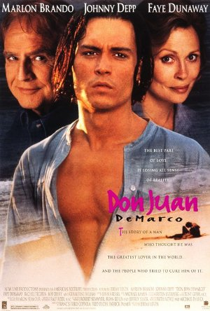
September 12, 2010Directed by Jeremy Leven; Starring Marlon Brando, Johnny Depp, Faye Dunaway
Don Juan DeMarco
USA, 1994, 97 min, Color, PG-13
In a wonderful late-career performance, Marlon Brando plays Dr. Jack Mickler, a clinical psychiatrist on the brink of retirement from a New York mental hospital. He is assigned to care for a dashing but suicidal young man, John R. DeMarco (Johnny Depp), who wears a mask and cape and claims to be the great lover, Don Juan. The avowed seducer of more than a thousand women has been brought low at the hands of his one true, but unobtainable, love. With just ten days to cure "Don Juan" of his delusion, Mickler has him relate his fantastical life story. As their sessions unfold, the passionate youth exerts a powerful effect on the hospital staff and on Mickler's own relationship with his wife, Marilyn (Faye Dunaway). The world-weary doctor starts to believe that his patient might really be Don Juan after all.
-
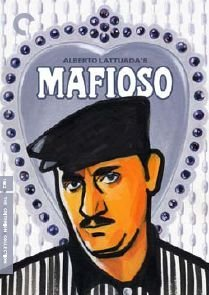
October 10, 2010Directed by Alberto Lattuada; Starring Alberto Sordi, Norma Bengell, Gabriella Conti, Ugo Attanasio
Mafioso
Italy, 1962, 105 min, B&W, Not Rated, Italian w/subtitles
A dark comedy with strong neo-realist influences, Mafioso was one of the first Italian features to address the subject of Cosa Nostra. Alberto Sordi stars as Antonio, a Sicilian working in a gleaming, modern Fiat factory in Milan. As the movie opens, Antonio prepares to take his lovely blonde wife, Marta (Norma Bengell), and their daughters to see his hometown of Calamo, Sicily. Before leaving, he agrees to deliver a gift from his boss to Don Vincenzo (Ugo Attanasio) in Calamo. On the ferry, Antonio beams with pride as the isle of his birth comes into view. His delight grows as he introduces his bride and children to his eccentric relations. Antonio's holiday comes to a sudden end, however, when Don Vincenzo asks him for a favor. Leaving his family (ostensibly on a hunting trip), Antonio embarks on an unexpected journey. Viewed through the lens of later American movies such as The Godfather trilogy, Mafioso offers a counterpoint to our voyeuristic fascination with the Mob. This forgotten gem was re-released to raves in 2007.
-
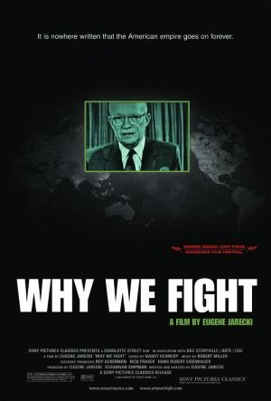
November 14, 2010Directed by Eugene Jarecki; Starring Ken Adelman, John Ashcroft, Osama bin Laden, George Bush
Why We Fight
France/UK/Canada, 2005, 98 min, Color/B&W, PG-13
Winner of the Grand Jury Prize at the 2005 Sundance Film Festival, Eugene Jarecki's documentary is an unflinching look at the anatomy of the American war machine. Weaving personal vignettes with commentary by John McCain, William Kristol, Chalmers Johnson, Gore Vidal, Richard Perle and others, Why We Fight mounts a bipartisan inquiry into the workings of the apparatus decried by President Dwight D. Eisenhower as the "military industrial complex." This film digs beneath the headlines about American military operations to explore the political, economic, and ideological forces that drive us to wage perpetual war against an ever-changing enemy. Inspired by Frank Capra's film series that explored the reasons for entering World War II, Jarecki's Why We Fight raises questions that have particular resonance today: Why are we doing what we're doing? What is it doing to others? And what is it doing to us?
-
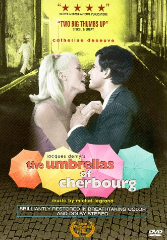
December 12, 2010Directed by Jacques Demy; Starring Catherine Deneuve, Nino Castelnuovo, Anne Vernon, Marc Michel
The Umbrellas of Cherbourg (Les parapluies de Cherbourg)
France/West Germany, 1964, 91 min, Color, Not Rated, French w/subtitles
Jacques Demy's masterpiece of music and romance, which won the Grand Prize at the 1964 Cannes Film Festival, propelled 20-year-old Catherine Deneuve to international stardom. A pop-art opera, or, to borrow the director's own description, a film in song, this simple romantic tragedy begins with Guy Foucher (Nino Castelnuovo), a 20-year-old French auto mechanic, falling in love with 17-year-old Geneviève Emery (Deneuve), who works in her widowed mother's chic but financially embattled umbrella shop. On the evening before Guy is to leave for a two-year tour of combat in Algeria, he and Geneviève make love. She becomes pregnant and must choose between waiting for Guy's return or accepting an offer of marriage from a wealthy diamond merchant (Marc Michel). Considered one of the most beautiful color films ever made, Umbrellas of Cherbourg was restored to its former glory and re-released in 1992 under the supervision of Demy's widow, Agnès Varda.
-
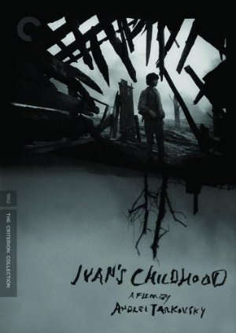
January 9, 2011Directed by Andrei Tarkovsky, Eduard Abalov; Starring Nikolay Burlyaev, Valentin Zubkov, Evgeniy Zharikov, Stepan Krylov
Ivan's Childhood (Ivanovo detstvo)
Soviet Union, 1962, 84 min, B&W, Not Rated, Russian w/subtitles
Russian director Andrei Tarkovsky created a style of filmmaking he called "sculpting in time," characterized by Christian and metaphysical themes, extremely long takes, and indelible images of extraordinary beauty. Hints of his poetic sensibility and deliberate pacing are already on display in his debut feature, Ivan's Childhood. In this World War II drama, 12-year-old Ivan (Nikolai Burlyayev) is orphaned after his village is overrun by the invading Nazi army. He escapes from a prison camp and is adopted by Captain Kholin (Valentin Zubkov). Although Kholin intends to send the boy to school, Ivan is determined to help the Russian army. He begins to spy on the Germans, passing freely back and forth behind enemy lines – for awhile. This remarkable film won the Golden Lion Award at the 1962 Venice Film Festival and the Grand Prize at the 1962 San Francisco Film Festival.
-
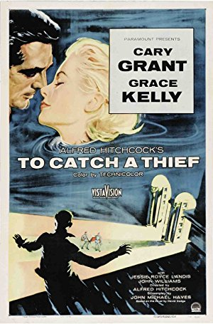
February 13, 2011Directed by Alfred Hitchcock; Starring Cary Grant, Grace Kelly, Jessie Royce Landis, John Williams, Brigette Auber
To Catch a Thief
USA, 1955, 106 min, Color, PG
John Robie (Cary Grant) is a reformed jewel thief who is falsely accused of a string of daring cat burglaries among the rich tourists in the South of France. In order to clear his name, Robie decides that only someone with his particular set of skills can catch the real thief. In the course of his quest, he meets Frances Stevens (Grace Kelly), a spoiled and jaded member of the nouveau riche family, and her mother (Jessie Royce Landis), a comically down-to-earth society matron. There is romance, plenty of double entendres, dazzling scenery, scenes of seduction, an over-the-top fancy dress ball and eventually a captured thief. While this film is not regarded as one of Hitchcock's masterpieces, it is an eminently enjoyable romp and equally memorable to his critically acclaimed work.
-
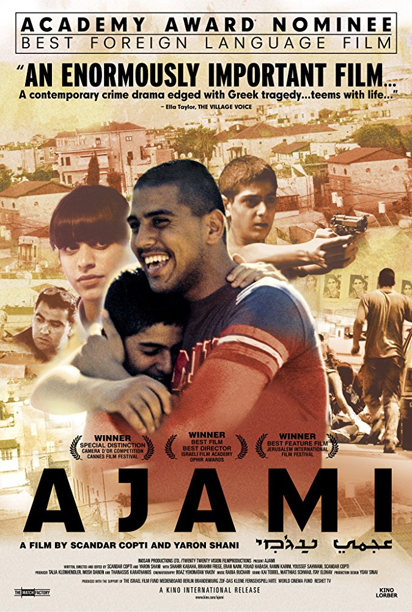
March 13, 2011Directed by Scandar Copti, Yaron Shani; Starring Fouad Habash, Nisrine Rihan, Elias Saba, Youssef Sahwani
Ajami
Israel/Germany, 2009, 124 min, Color, Not Rated, Arab/Hebrew w/subtitles
Winner of Best Picture at the Israeli Ophir Awards and an Academy Award nominee for Best Foreign Language Film, Ajami is a multi-layered crime drama set in the streets of Jaffa-Tel Aviv, Israel – a melting pot of Muslims, Jews, and Christians. Characters include a young Israeli (Shahir Kabaha) fighting a criminal vendetta against his family; a Palestinian (Ibrahim Frege) working illegally to finance a life-saving surgery; a Jewish police detective (Eran Naim) obsessed with finding his missing brother; and an affluent Palestinian (Scandar Copti) dreaming of a future with his Jewish girlfriend. As their stories intersect and the film shifts back and forth in time, we witness the tragic consequences of enemies living as neighbors. Co-written and directed by a Jaffa-born Arab and an Israeli, and starring a local, nonprofessional cast, Ajami is a vivid portrayal of a multi-ethnic Israeli community's response to a violent act of vengeance.
-
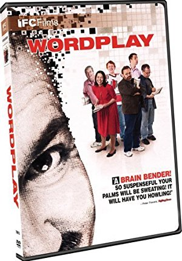
April 10, 2011Directed by Patrick Creadon; Starring Will Shortz, Merl Reagle, Tyler Hinman, Trip Payne
Wordplay
USA, 2006, 94 min, Color, PG
Crossword puzzlers everywhere rejoiced at Patrick Creadon's lively and oddly exhilarating love letter to the English language and the people who revere it. Centering on New York Times Crossword editor and puzzle master Will Shortz, Wordplay spotlights a number of highly skilled crossword pros competing at the American Crossword Puzzle Tournament in Stamford, Connecticut, whose sharp wits and endearing eccentricities shine. Also interviewed are a bevy of celebrity crossword fanatics – including Bill Clinton, Bob Dole, the Indigo Girls, Jon Stewart, Ken Burns, and Yankees pitcher Mike Mussina – each of whom sings the praises of the form.
-
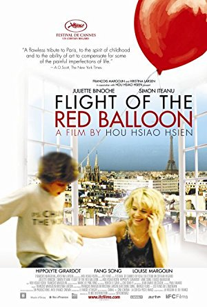
May 8, 2011Directed by Hsiao-Hsien Hou; Starring Juliette Binoche, Hippolyte Girardot, Simon Iteanu, Song Fang
Flight of the Red Balloon (Le voyage du ballon rouge)
France/Taiwan, 2007, 115 min, Color, Not Rated, French w/subtitles
Hou Hsiao-Hsien transforms the details of everyday life into poetry in his tribute to Albert Lamorisse's 1956 classic short, The Red Balloon. Juliette Binoche stars as a Parisian mother overwhelmed by the complications of modern life. She hires Song (Song Fang), a Taiwanese film student, to babysit her son, Simon (Simon Iteanu). As Simon and Song explore the city, they create an imaginary world where a mysterious red balloon follows them wherever they go. Borrowing Lamorisse's conceit of a red balloon tracking a lonely boy through the City of Lights, Hou weaves an extended meditation on urban isolation. The New York Times called this "A flawless tribute to Paris, to the spirit of childhood and to the ability of art to compensate for some of the painful imperfections of life."
-
 June 12, 2011Directed by Hal Ashby; Starring Ruth Gordon, Bud Cort, Vivian Pickles, Cyril Cusack
June 12, 2011Directed by Hal Ashby; Starring Ruth Gordon, Bud Cort, Vivian Pickles, Cyril Cusack
Harold and Maude
USA, 1971, 91 min, Color, Not Rated
A young man with a death wish and a 79-year-old high on life find love in this cult classic. Deadpan rich kid Harold (Bud Cort) stages elaborate suicide tableaux in a vain attempt to win the attention of his mother (Vivian Pickles), who is too busy planning for his brilliant future. The death-obsessed Harold spooks blind dates and modifies his sports car to look like a hearse. He also attends funerals, where he meets the spirited Maude (Ruth Gordon). Eccentric to the bone, Maude lives exactly as she pleases, with avid collecting and nude modeling among her many pursuits. To the chagrin of his relatives and the befuddlement of his shrink, Harold falls in love. As lilting Cat Stevens tunes play on the soundtrack, Maude teaches Harold a valuable lesson about making the most of his time on earth.
-
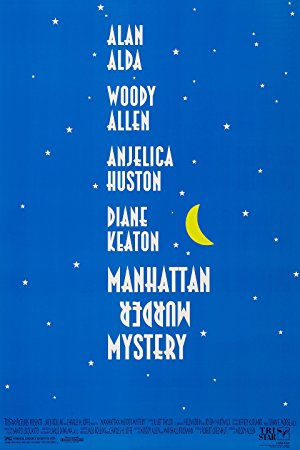
July 10, 2011Directed by Woody Allen; Starring Woody Allen, Diane Keaton, Alan Alda, Anjelica Huston
Manhattan Murder Mystery
USA, 1993, 104 min, Color, PG
Woody Allen's reunion with Diane Keaton, two decades after their comedic heyday, is an absolute delight. Allen plays
Alvi SingerLarry Lipton, a nebbish-y editor married to the free-spiritedAnnie HallCarol (Keaton). When it appears that a neighbor has killed his wife, Carol is eager to investigate. Larry dismisses Carol's suspicions, but their friend Ted (Alan Alda) is all too willing to help her. Marcia Fox (Anjelica Huston), a stylish, seductive writer whose book Larry is editing, also signs on as amateur sleuth. Wary of Ted and Carol's budding relationship, Larry reluctantly comes along for the ride. Though Allen winks and nods to genre conventions – there's a murder to solve, after all – he steers the film toward his usual subjects: romance and neurosis on the Upper West Side. Manhattan Murder Mystery covers familiar terrain, but in a winning way that recalls the transcendent Allen/Keaton comedies of the 1970's. Watch for the director's homage to Orson Welles' bravura hall of mirrors scene in The Lady from Shanghai. -
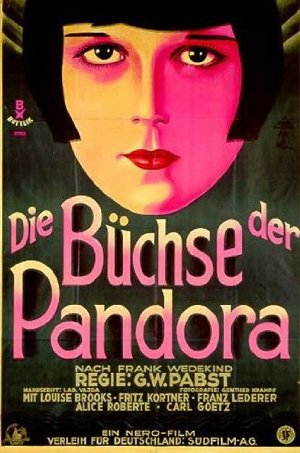
August 14, 2011Directed by Georg Wilhelm Pabst; Starring Louise Brooks, Fritz Kortner, Francis Lederer, Carl Götz
Pandora's Box (with live musical accompaniment)
Germany, 1929, 109 min, B&W, Not Rated, Silent w/intertitles
German filmmaker G.W. Pabst's late-silent classic, Pandora's Box, stars the hauntingly beautiful Louise Brooks as libertine dancer Lulu, an amoral vamp who wanders through a decadent Berlin innocently destroying everyone she meets. Ever out for the "main chance," Lulu persuades her wealthy lover Dr. Schön (Fritz Kortner) to marry her. But in a fit of jealous rage, he pulls a gun, a scuffle ensues, and she shoots him. Escaping to London with the doctor's moonstruck son, Alwa (Francis Lederer), Lulu takes up residence with her "adopted" father Schigolch (Carl Götz), where she is reduced to walking the streets. Regarded now as a masterpiece, Pandora's Box received surprisingly scathing reviews, with most of the critical broadsides aimed at Brooks. We are delighted to present Pandora's Box with live piano by David Drazin, a music and movie archivist nationally renowned for his improvised accompaniments to silent films.
Read Roger Ebert's review of Pandora's Box at Great Movies.